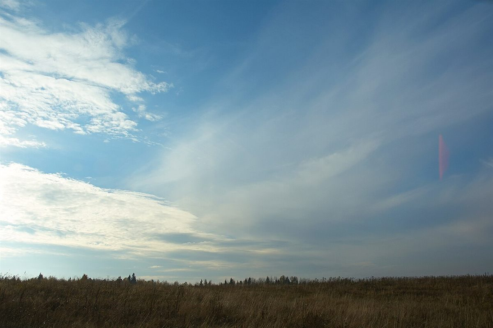

語源
et の綴じ目
お店について確認できているのは、所在地とInstagramのアカウントだけです。
このページの「語釈」は、制作側が屋号から想像して書いたものです。お店の実際の様子・考え・由来とは関係ありません。
確認できていること
- 屋号は「Pain et Sucre(パン エ シュクレ)」、業種はカフェ・パン
- 所在地は千葉県流山市青田140(〒270-0112)
- 電話番号はなし。連絡はInstagramから
- 営業時間・定休日・メニュー・価格・ご予約・駐車場は準備中

語釈(制作側の想像)
「パンと砂糖」を引いてみる
パンも砂糖も、毎日の食卓にそっと置かれる言葉です。制作側は、屋号から「素朴なもの」と「甘いもの」が並ぶ様子を想像しました。ただしこれは辞書の例文のような遊びで、お店が何を提供しているかを示すものではありません。


土地のこと
流山市について
流山市は千葉県の北西部にある市です。屋号やお店の由来との関係は分かりません。制作側は、地名の「青田」から広がる野原の空を想像して、写真を一枚添えました(撮影地は国外で、青田の風景ではありません)。
